NODE DUMP called at source/tree.cpp:279:TreeLoadNode(): Created new node - ""ловит мышей"("Полторашка"nilnil)("таракан"nilnil))("любит много спать"("занимается ИИ"("Вадим"nilnil)("Василий"nilnil))("Вова"nilnil)))".
curPos = '("ловит мышей"("Полторашка"nilnil)("таракан"nilnil))("любит много спать"("занимается ИИ"("Вадим"nilnil)("Василий"nilnil))("Вова"nilnil)))'
NODE DUMP called at source/tree.cpp:279:TreeLoadNode(): Created new node - ""Полторашка"nilnil)("таракан"nilnil))("любит много спать"("занимается ИИ"("Вадим"nilnil)("Василий"nilnil))("Вова"nilnil)))".
curPos = '("Полторашка"nilnil)("таракан"nilnil))("любит много спать"("занимается ИИ"("Вадим"nilnil)("Василий"nilnil))("Вова"nilnil)))'
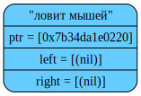
NODE DUMP called at source/tree.cpp:279:TreeLoadNode(): Created new node - "ilnil)("таракан"nilnil))("любит много спать"("занимается ИИ"("Вадим"nilnil)("Василий"nilnil))("Вова"nilnil)))".
curPos = 'nilnil)("таракан"nilnil))("любит много спать"("занимается ИИ"("Вадим"nilnil)("Василий"nilnil))("Вова"nilnil)))'

NODE DUMP called at source/tree.cpp:283:TreeLoadNode(): After creating left subtree.
curPos = '("таракан"nilnil))("любит много спать"("занимается ИИ"("Вадим"nilnil)("Василий"nilnil))("Вова"nilnil)))'
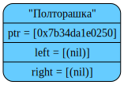
NODE DUMP called at source/tree.cpp:279:TreeLoadNode(): Created new node - "ilnil))("любит много спать"("занимается ИИ"("Вадим"nilnil)("Василий"nilnil))("Вова"nilnil)))".
curPos = 'nilnil))("любит много спать"("занимается ИИ"("Вадим"nilnil)("Василий"nilnil))("Вова"nilnil)))'

NODE DUMP called at source/tree.cpp:287:TreeLoadNode(): After creating right subtree.
curPos = ')("любит много спать"("занимается ИИ"("Вадим"nilnil)("Василий"nilnil))("Вова"nilnil)))'
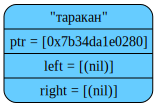
NODE DUMP called at source/tree.cpp:283:TreeLoadNode(): After creating left subtree.
curPos = '("любит много спать"("занимается ИИ"("Вадим"nilnil)("Василий"nilnil))("Вова"nilnil)))'
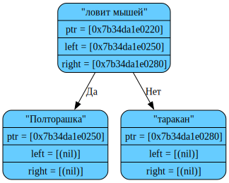
NODE DUMP called at source/tree.cpp:279:TreeLoadNode(): Created new node - ""занимается ИИ"("Вадим"nilnil)("Василий"nilnil))("Вова"nilnil)))".
curPos = '("занимается ИИ"("Вадим"nilnil)("Василий"nilnil))("Вова"nilnil)))'
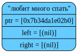
NODE DUMP called at source/tree.cpp:279:TreeLoadNode(): Created new node - ""Вадим"nilnil)("Василий"nilnil))("Вова"nilnil)))".
curPos = '("Вадим"nilnil)("Василий"nilnil))("Вова"nilnil)))'
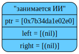
NODE DUMP called at source/tree.cpp:279:TreeLoadNode(): Created new node - "ilnil)("Василий"nilnil))("Вова"nilnil)))".
curPos = 'nilnil)("Василий"nilnil))("Вова"nilnil)))'
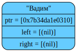
NODE DUMP called at source/tree.cpp:283:TreeLoadNode(): After creating left subtree.
curPos = '("Василий"nilnil))("Вова"nilnil)))'

NODE DUMP called at source/tree.cpp:279:TreeLoadNode(): Created new node - "ilnil))("Вова"nilnil)))".
curPos = 'nilnil))("Вова"nilnil)))'

NODE DUMP called at source/tree.cpp:287:TreeLoadNode(): After creating right subtree.
curPos = ')("Вова"nilnil)))'
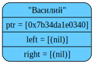
NODE DUMP called at source/tree.cpp:283:TreeLoadNode(): After creating left subtree.
curPos = '("Вова"nilnil)))'
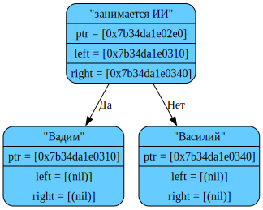
NODE DUMP called at source/tree.cpp:279:TreeLoadNode(): Created new node - "ilnil)))".
curPos = 'nilnil)))'

NODE DUMP called at source/tree.cpp:287:TreeLoadNode(): After creating right subtree.
curPos = '))'

NODE DUMP called at source/tree.cpp:287:TreeLoadNode(): After creating right subtree.
curPos = ')'
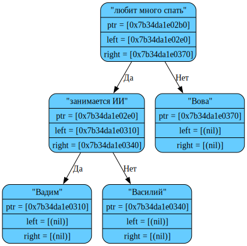
TREE DUMP called at source/main.cpp:43:main(): After loading from text file
&tree[0x7b04d9000050] initialized in {source/main.cpp:13}
tree->size = 9;
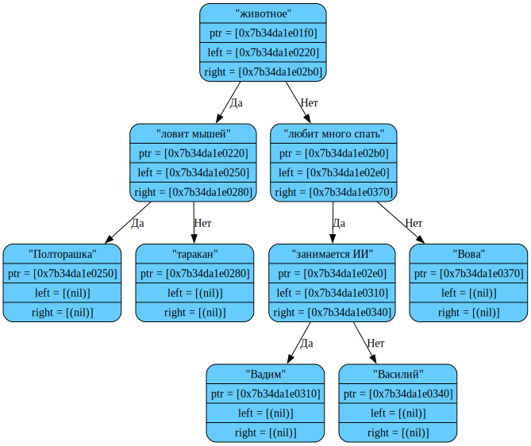